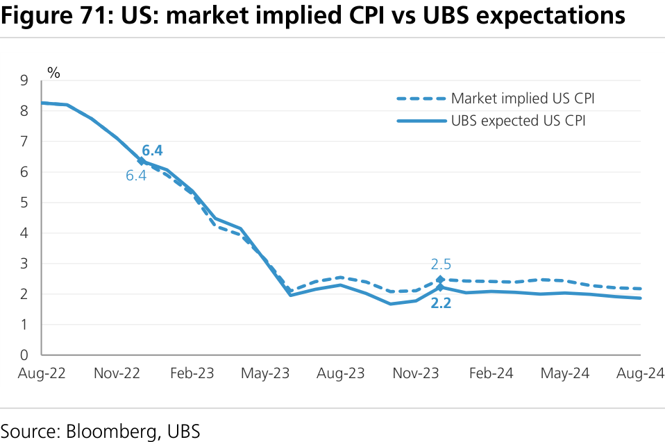
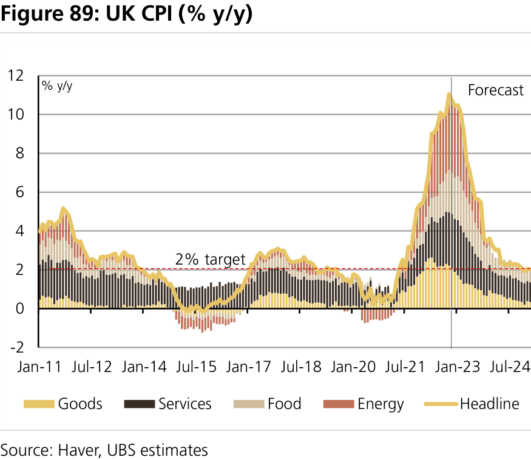

Global Research and Evidence Lab
a b
Global Strategy
Global
Q-Series How to Position for Disinflation in Equities
The pace of inflation surprised ‘22. The pace of disinflation could surprise in '23.
Having peaked higher and persisted for longer than most expected, inflation is finally rolling over fast. From here, we think the pace of disinflation will also be faster than markets expect. Inflation-breakevens are pricing 2.5% and 2.3% y/y US CPI for Dec ’23 and Dec’24, respectively. Our expectations are lower at 2.2% and 1.7%. Continuing our prior work on stagflation and slowflation , we now present a new quantitative framework that shows how the pace of disinflation impacts assets. We provide lists of stocks best suited to position for disinflation in the US, EU, UK, APAC and LatAm. We also quantify the probabilities equity markets imply of inflation reaching different thresholds (including central bank targets) by end '23 and end '24.
What will drive disinflation this year?
Supply bottlenecks have fully eased, core goods prices are coming lower, oil and natural gas prices have underperformed their forwards, and the marginal rental leases are being negotiated at much lower rates. Our real time measures show the labour market is weaker than headline payroll or vacancies suggest. Europe's inflation surge has been driven largely by energy. Although HICP inflation will only reach the ECB's 2% target in 2025, disinflation will be the dominant theme between now and then. China is the exception where inflation is likely to rise temporarily to 3% in '23 before dropping back to 2.1% in '24. More broadly, in APAC, disinflation will still be the dominant theme in '23.
How to position for a disinflation regime?
We have designed a quantitative framework to screen for stocks that are positioned to benefit in a disinflationary environment. Leveraging our local and global inflation indexes, we select the stocks most positively/negatively impacted by disinflation in the US, Europe, UK, APAC and LatAm based on: (1) return sensitivity to changes in our inflation indexes, (2) price performance during periods of declining inflation, and (3) sensitivity of revenues to changes in our inflation indexes. Using this bottom-up analysis we get the following implied industry/sector-level picture:
1. Overweights : Health Care, Tech, Comm. Services and Cons. Discretionary
Consumer Discretionary, Health Care and Communication Services have empirically overperformed other sectors during periods of declining inflation, and have exhibited the lowest beta to inflation changes. Tech and Health Care expected revenues are the least positively correlated with the change in our inflation indexes.
2. Underweights : Energy, Industrials and Financials
Unsurprisingly, Energy consistently ranked the worst across the 4 regions. Financials and Industrials also score poorly (almost always in the bottom half) on all 3 metrics. Materials is another potential candidate for underweight, especially in Europe and Apac.
What probability do markets ascribe to being back at central bank targets?
Currently, S&P500 internals are pricing in an 8% and 16% probability of inflation being at central bank target by Dec '23 and Dec '24. European and UK companies are pricing even lower probabilities, at 5% and 11% for Europe and 4% and 8% for UK, while Asian companies are pricing the highest probabilities, at 26% and 38%. In LatAm countries, CPIs have started to decline since Q2, earlier than developed countries, explaining the current pricing, at 10% and 20%. We expect most central bank targets will be hit in 2023 itself. Results from backtesting suggest our lists of stocks most impacted by disinflation could outperform.
This report has been prepared by UBS Europe SE. ANALYST CERTIFICATION AND REQUIRED DISCLOSURES, including information on the Quantitative Research Review published by UBS, begin on page 36.
====================================================================================================
How this note is laid out
As an introduction, we go back through the whole inflation journey which started with Stagflation fears in Q1'22, then moved to a less uncomfortable Slowflation set-up in H2'22, to end with Disinflation in 2023. We also highlight why it is important to distinguish supply shock to demand shock. Then, in Part I, we lay out our methodology to construct stocks lists that should outperform (underperform) in a disinflationary environment, giving investors a liquid way to play the theme. In Part II, we calculate the probabilities the equity market implies for inflation reaching a given level over a given horizon. In Part III, our economic team shares their inflation views per region, highlighting the most recent dynamics and the key data and key drivers to watch.
1. Executive Summary in Few Charts 2. Global lists of UBS covered stocks with positive/negative impact from disinflation
Introduction: The last bit of the inflation journey
3. From Stagflation to Slowflation to Disinflation 4. Supply shock vs. demand shock, why it is important
Part I: How to position for disinflation in global equities
5. How to position for disinflation in the US? 6. How to position for disinflation in Europe? 7. How to position for disinflation in the UK? 8. How to position for disinflation in APAC? 9. How to position for disinflation in Latam?
Part II: What probability do markets ascribe to being back at 2%?
10. A gap between our economic teams expectations and the TIPS markets 11. Disinflation probability implied by equity market internals
Part III: Quick summary of our economists' views on (dis)inflation in their region
12. What our economist says about (dis) inflation in the US ? 13. What our economist says about (dis) inflation in Europe ? 14. What our economist says about (dis) inflation in the UK? 15. What our economist says about (dis) inflation in Japan? 16. What our economist says about (dis) inflation in China? 17. What our economist says about (dis) inflation in Australia & New Zealand? 18. What our economist says about (dis) inflation in Brazil & Mexico? 19. What our economist says about (dis) inflation in Central & Eastern Europe and South Africa?
Appendix 1: Two statistical techniques to calculate implied probability
25. Probability of hitting a threshold, over a given horizon - using a VaR like approach 26. Probability of hitting a threshold, over a given horizon - using a One Touch option pricing approach
====================================================================================================
Q-Series
Executive Summary in Few Charts
history, not that of the whole panel of countries. Inflation index at 0 means inflationary pressures are at long term trend/average
UBS Research
Figure 1: 80% of our sample of economies saw lower price increases in the second half of 2022 than in the first half of the year
Figure 2: Signs of easing inflation seem clearer than in the earlier false dawns
Figure 3: Those easing signs are yet to be fully reflected in our inflation indices

====================================================================================================
Figure 4: The direction of travel from here is clear, downwards. The TIPS market agrees with us, although our forecasts are slightly lower
Figure 5: We expect global growth to be historically weak in 2023, at 2.1%,
Figure 6: 2021 experienced a demand shock, 2022 a supply shock. We have
====================================================================================================
Leveraging our local and global inflation indexes, we select the stocks most positively/negatively impacted by disinflation based on: (1) return sensitivity to changes in our inflation indexes, (2) price performance during periods of declining inflation, and (3) sensitivity of revenues to changes in our inflation indexes. Health Care, Tech, Comm. Services and Cons. Discretionary come out as overweights … while Energy, Industrials and Financials come out as underweights
Figure 7: Our framework identifies stocks and sectors that should outperform/ underperform in a disinflationary environment (stock lists can be found here )
Figure 8: Backtesting exercises (done ex-post) seem to validate our selection
Figure 9: Equity markets still appear to price low probabilities of inflation
====================================================================================================
Global lists of UBS covered stocks with positive/ negative impact from disinflation
Figure 10: Shortened list of UBS covered stocks with positive impact from disinflation’ based on UBS Strategy framework
Figure 11: Shortened list of UBS covered stocks with negative impact from disinflation’ based on UBS Strategy framework
====================================================================================================
Introduction: The last bit of the inflation journey
From Stagflation fears to Slowflation in 2022, to Disinflation in 2023
Figure 12: US sectors' performance, conditional to growth and inflation levels - since 1995
Figure 13: Health Care, Consumer Staples performance is less sensitive to the state of the growth & inflation mix, than
====================================================================================================
Figure 15: US Stagflation Pressure Index
Figure 14: Inflation and Stagnation (inverse of growth)
Figure 17: Stagflation probability implied by equity market
Figure 16: US and Germany Stagflation Pressure Indices'
Figure 18: Sector allocation that emerges from the
Figure 19: Equity performance through different quartiles
====================================================================================================
Figure 20: Definition of Slowflation (versus stagflation) − distribution view
Figure 21: US sectors' performance for individual slowflation and stagflation
Figure 22: US sectors' change in performance during
Figure 23: S&P500 - implied sector allocation when
====================================================================================================
Supply shock vs. demand shock, why it is important
Figure 24: MSCI ACWI sectors' relative (vs. index) performance in 2021 and 2022
Figure 25: MSCI ACWI industries' relative (vs. index)
Figure 26: Higher prices in 2021 were mostly driven by a
Figure 27: In 2022, supply bottlenecks, magnified by the
====================================================================================================
Part I: Our framework identifies the stocks that should be positively (negatively) impacted by a disinflationary environment
UBS methodology and framework
UBS initial results for major markets
1. Overweights
2. Underweights
Our positively vs. negatively impacted US stocks have tracked the changes in US CPI very well (correlation of 64%, see Figure 32 UBS' disinflation stock list (US) and US CPI y/y )
We get similar results/correlations for the other regions, ranging from 63% (EU), to 68% (UK), to 69% (Asia), to 73% (Latam)
We present sector and stock list results for the S&P500, Eurostoxx 600, FTSE 350, MSCI APAC and MSCI Latam
Figure 28: Model optimal sector allocation to benefit in a disinflationary environment - per country
====================================================================================================
a) S&P500: stocks with positive/negative impact from disinflation
Model most favoured US sectors: Tech, Consumer Discretionary, Comm. Services and Health care
Model least favoured US sectors: Energy, Financial and Real Estate
Figure 29: S&P500 sector allocation implied by the list of stocks positively impacted by disinflation
Figure 30: S&P500 sector allocation implied by the list of
Figure 31: S&P500 - implied sector allocation when combining the list of stocks
====================================================================================================
Figure 32: UBS' disinflation stock list (US) and US CPI y/y
Figure 33: Score based on US sectors' returns correlation

Figure 34: Score based on US sectors' performance during
Figure 35: Score based on US sectors' 12mth forward sales

Figure 36: S&P500 - Model optimal allocations vs. 2022
====================================================================================================
b) Eurostoxx 600: stocks with positive/negative impact from disinflation
Model most favoured EU sectors: Health Care, Real Estate and Tech
Model least favoured EU sectors: Financials and Energy
Figure 37: EU600 sector allocation implied by the list of stocks positively impacted by disinflation
Figure 38: EU600 sector allocation implied by the list of
Figure 39: EU600 - implied sector allocation when combining the list of stocks
====================================================================================================
Figure 40: UBS' disinflation stock list (EU) and EU CPI y/y
Figure 41: Score based on EU sectors' returns correlation
Figure 42: Score based on EU sectors' performance during
Figure 43: Score based on EU sectors' 12mth forward sales
Figure 44: EU600 - Model optimal allocations vs. 2022
====================================================================================================
Macro, micro and the nuances in this unusual cycle
Figure 45: The "implied" overweight in Health Care in our disinflation framework is almost entirely coming from Health Care Equipment names, not Pharma names. Or, it is also the latter that is among the least preferred industries in our European Equity Strategy Outlook
Figure 46: Financials have historically underperformed the market when inflation have declined. On the
====================================================================================================
c) FTSE 350: stocks with positive/negative impact from disinflation
Model most favoured UK sectors: Health Care and Tech
Model least favoured UK sectors: Industrials, Energy and Utilities
Figure 47: FTSE350 sector allocation implied by the list of stocks positively impacted by disinflation
Figure 48: FTSE350 sector allocation implied by the list of
Figure 49: FTSE350 - implied sector allocation when combining the list of stocks
====================================================================================================
Figure 50: UBS' disinflation stock list (UK) and UK RPI y/y
Figure 51: Score based on UK sectors' returns correlation
Figure 52: Score based on UK sectors' performance during
Figure 53: Score based on UK sectors' 12mth forward sales
Figure 54: FTSE350 - Model optimal allocations vs. 2022
====================================================================================================
d) MSCI APAC: stocks with positive/negative impact from disinflation
Model most favoured APAC sectors: Health Care and Comm. Services
Model least favoured APAC sectors: Energy, Industrials and Materials
Figure 55: MSCI Apac sector allocation implied by the list of stocks positively impacted by disinflation
Figure 56: MSCI Apac sector allocation implied by the list of
Figure 57: MSCI Apac - implied sector allocation when combining the list of
====================================================================================================
Figure 58: One-year rolling returns of our positively vs negatively impacted by disinflation stocks list versus one-year rolling change in our Asia inflation index
Figure 59: Score based on APAC sectors' returns correlation
Figure 60: Score based on APAC sectors' performance
Figure 62: MSCI APAC - Model optimal allocations vs. 2022

Figure 61: Score based on APAC sectors' 12mth forward
====================================================================================================
e) MSCI Latam: stocks with positive/negative impact from disinflation
Model most favoured LATAM sectors: Cons. Discretionary and Health Care
Model least favoured LATAM sectors: Financials and Energy
Figure 63: MSCI Latam sector allocation implied by the list of stocks positively impacted by disinflation
Figure 64: MSCI Latam sector allocation implied by the list
Figure 65: MSCI Latam - implied sector allocation when combining the list of
====================================================================================================
Figure 66: One-year rolling returns of our positively vs negatively impacted by disinflation stocks list versus one-year rolling change in our Latam inflation index
Figure 67: Score based on Latam sectors' returns
Figure 68: Score based on Latam sectors' performance
Figure 70: MSCI Latam - Model optimal allocations vs. 2022
Figure 69: Score based on Latam sectors' 12mth forward
====================================================================================================
Part II: What probability do markets ascribe to being back at 2% by December 2023?
A gap between our economic teams expectations and the TIPS markets
Our inflation forecasts are 30bps lower in the US and in the UK, 110bps lower in Europe, than what is priced in the TIPS market
If core inflation were to land around 3% (headline around 4%), the valuation adjustment needed would see the S&P500 at 2,550
Figure 71: US: market implied CPI vs UBS expectations
Figure 72: Europe: market implied CPI vs UBS expectations
Figure 73: UK: market implied CPI vs UBS expectations
Figure 74: Reversing inflation is crucial therefore; the
====================================================================================================
Disinflation probability implied by equity market internals
Implied probability of inflation being at CBs' targets by Dec 23 (Dec 24) are: S&P: 8%(16%), EU600: 5%(11%), FTSE350: 4%(8%), MSCI Asia: 26%(38%), MSCI Latam: 10%(20%)
Figure 76: Market Implied Probability of US CPI hitting x%
Figure 75: Market Implied Probability of hitting central
Figure 77: Market Implied Probability of EU CPI hitting x%
Figure 78: Market Implied Probability of UK CPI hitting x%
Figure 79: Market Implied Probability of Asia CPI hitting x
Figure 80: Market Implied Probability of Latam CPI hitting x
====================================================================================================
Figure 81: Market Implied Probability of CPI hitting 2% in next 12 months
Figure 82: US disinflation: Macro data and market implied
Figure 83: Market Implied Probability of CPI hitting x% by December 2023 and December 2024
====================================================================================================
Part III: Quick summary of our economists' views on (dis)inflation in their region
What our US economists say about (dis) inflation in the US ?
Alan Detmeister
Duda Freire
We expect headline CPI inflation to drop from the current 7.1% level to around 2% by the summer
Figure 84: Rapid market rent increases have retreated
Figure 85: The process of disinflation has started, but still
Figure 86: The 3-month change in PCE core goods prices
====================================================================================================
What our EU/UK economist says about (dis) inflation in Europe ?
What our EU/UK economist says about (dis) inflation in the UK?
Anna Titareva
We believe October was the peak in Eurozone inflation
We forecast inflation to average 6% consistently returning to 2% only in
Anna Titareva
Similar to Europe, we believe UK inflation is now past its peak, averaging 6.5% in 2023 and 2.4% in
Figure 87: Eurozone inflation - component contributions
Figure 88: Eurozone inflation
====================================================================================================
What our Chinese economist says about (dis) inflation in China?
Tao Wang
China CPI inflation will likely average only 2% in 2022, and 3% in 2023 (the government’s target is around 3%)
Weak PPI inflation in 2023 (0.6% UBSe) should help offset some of the reflationary pressure in CPI (Covid re- opening)
Figure 89: UK CPI (% y/y)
Figure 90: UK CPI components (% y/y)
Figure 91: CPI inflation is expected to rise after re-opening
Figure 92: Decelerating PPI should help keep CPI inflation
====================================================================================================
What our Japanese economist says about (dis) inflation in Japan?
What our ANZ economist says about (dis) inflation in Australia?
Masamichi Adachi
Go Kurihara
We expect disinflation to start in Japan from Jan/Feb 2023, and falling below 2% by H2 of 2023
Nic Guesnon
George Tharenou
We see CPI dropping sharply from ~8.0% in Q4-22 to 3.6% by end-23, well below the RBA's forecast, albeit still above the RBA’s 2-3% inflation target
Figure 93: Monthly CPI projection (% yoy)
Figure 94: Policy rates
====================================================================================================
What our ANZ economist says about (dis) inflation in New Zealand?
Robin Clements
Nic Guesnon
We expect NZ CPI to be at 3%, i.e. the top end of RBNZ target band, by Q1- 24 (vs RBNZ Q3-24); and ~mid-point 2% by mid-2024 (RBNZ H2-25)
Figure 95: Australian wages catching up to global trends, but expected to remain below NZ & US; albeit Government wages policy is an upside risk
Figure 96: RBA historically stopped hiking rates before
Figure 97: CPI to fall below the mid-point of the RBNZ’s
Figure 98: Housing driven by home-building and rents, but
====================================================================================================
What our Latam economist says about (dis) inflation in Brazil?
What our Latam economist says about (dis) inflation in Mexico?
Alexandre de Azara
Rodrigo Martins
Brazilian inflation peaked at 12.1% by April 2022, and has started to recede since then
We expect 12-month inflation to reach around 3% by June 2023 and then re-accelerate to 4.5% by December 2023 (base effect)
Rafael De La Fuente
We expect inflation in Mexico to fall sharply in the coming year, with both headline and core inflation to end the year at 4.2%, modestly above Banxico 3% +/-1% target band
Figure 99: IPCA and core inflation forecasts (% YoY)
Figure 100: UBS inflation forecasts (% YoY)
====================================================================================================
What our Emerging EMEA economist says about (dis) inflation in Central & Eastern Europe and South Africa?
Gyorgy Kovacs
Anna Zadornova
While we expect CEE inflation to slow in 2023, we do not see any central bank in the region meeting its inflation goal next year
In South Africa, we expect the headline to return to the SARB's target band (3-6%) by mid-2023 and hover in the range of 4.5-5% in H2 23
Figure 102: Mexico : 12m Inflation
Figure 101: Mexico: International food inflation vs Mexico
Figure 103: CEE inflation outlook, % y/y
Figure 104: South African inflation outlook, % y/y
====================================================================================================
Appendix 1: Two statistical techniques to calculate implied probability
Probability of hitting a threshold, over a given horizon - using a VaR like approach
====================================================================================================
Sonam Jagga Shiva Rohith Adhikari,
====================================================================================================
Valuation Method and Risk Statement
====================================================================================================